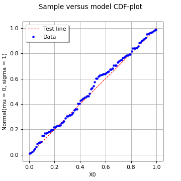

DrawCDFplot¶
(Source code, png)
{kind=link}

- DrawCDFplot(*args)¶
Draw a CDF-plot.
Refer to Using QQ-plot to compare two samples.
- Available usages:
VisualTest.DrawCDFplot(sample1, sample2)
VisualTest.DrawCDFplot(sample1, distribution);
- Parameters:
- sample1, sample22-d sequences of float
Tested samples.
- ditribution
Distribution Tested model.
- Returns:
- graphclass:~openturns.Graph
The graph object
Notes
The CDF-plot is a visual fitting test for univariate distributions. It opposes the normalized sample ranks to those of the tested quantity (either a distribution or another sample) by plotting the following points cloud:
![\left(\dfrac{i+1/2}{m},
F(x^{(i)})
\right), \quad i = 1, \ldots, m]()
where
 denotes either the CDF function of the tested
distribution or the empirical CDF of the second tested sample.
denotes either the CDF function of the tested
distribution or the empirical CDF of the second tested sample.If the given sample fits to the tested distribution or sample, then the points should be close to be aligned (up to the uncertainty associated with the estimation of the empirical probabilities) with the first bissector whose equation reads:
![y = x, \quad x \in [0,1]]()
Examples
>>> import openturns as ot >>> from openturns.viewer import View
Generate a random sample from a Normal distribution:
>>> ot.RandomGenerator.SetSeed(0) >>> distribution = ot.WeibullMin(2.0, 0.5) >>> sample = distribution.getSample(30) >>> sample.setDescription(['Sample'])
Draw a CDF-plot against a given (inferred) distribution:
>>> tested_distribution = ot.WeibullMinFactory().build(sample) >>> CDF_plot = ot.VisualTest.DrawCDFplot(sample, tested_distribution) >>> View(CDF_plot).show()
Draw a two-sample CDF-plot:
>>> another_sample = distribution.getSample(50) >>> another_sample.setDescription(['Another sample']) >>> CDF_plot = ot.VisualTest.DrawCDFplot(sample, another_sample) >>> View(CDF_plot).show()